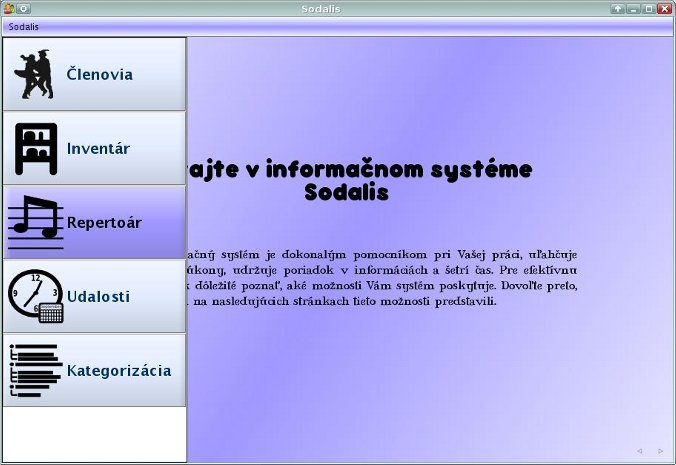

Moduly
V ľavej časti okna je možné vyvolať zoznam dostupných častí aplikácie, tzv. modulov. Takýto modul je možné vyvolať kliknutím na ňho v zozname, alebo použitím klávesovej skratky CTRL+[číslo modulu], kde [číslo modulu] je poradové číslo modulu v zozname.
